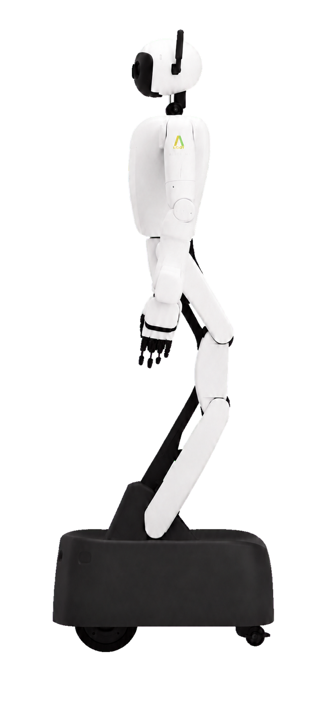
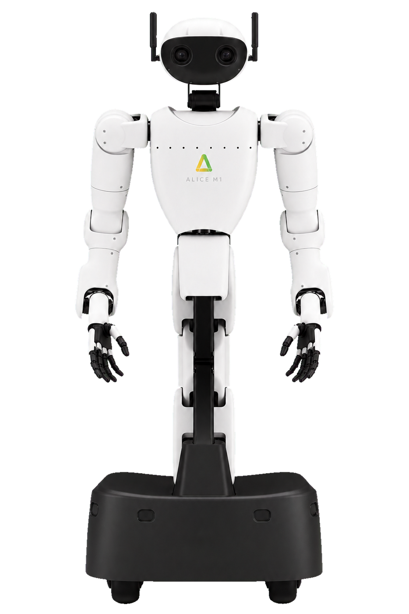
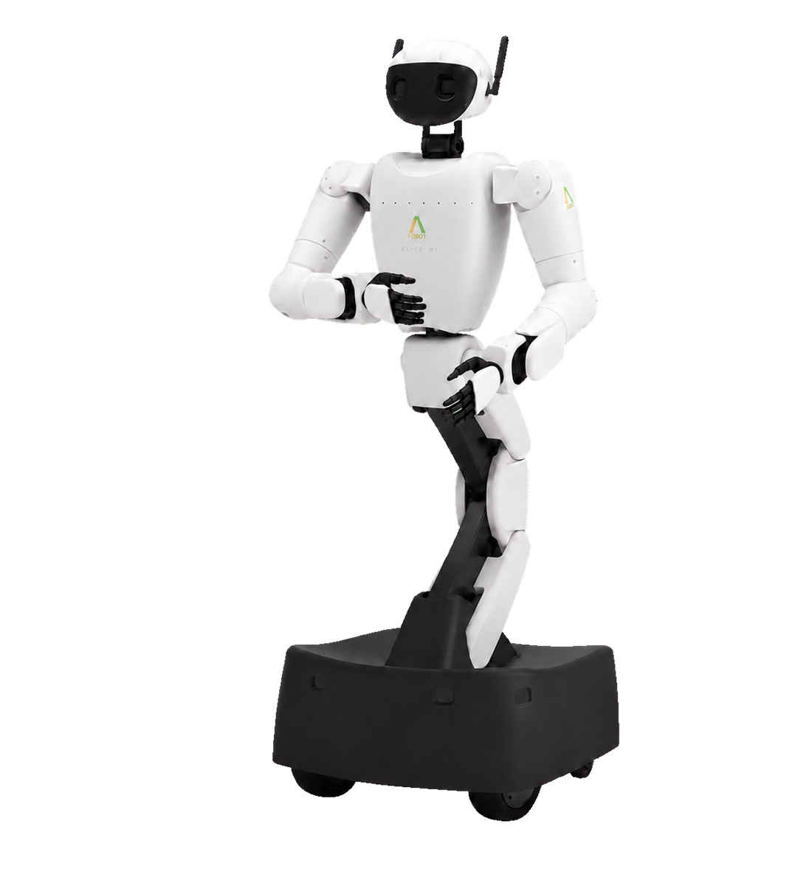
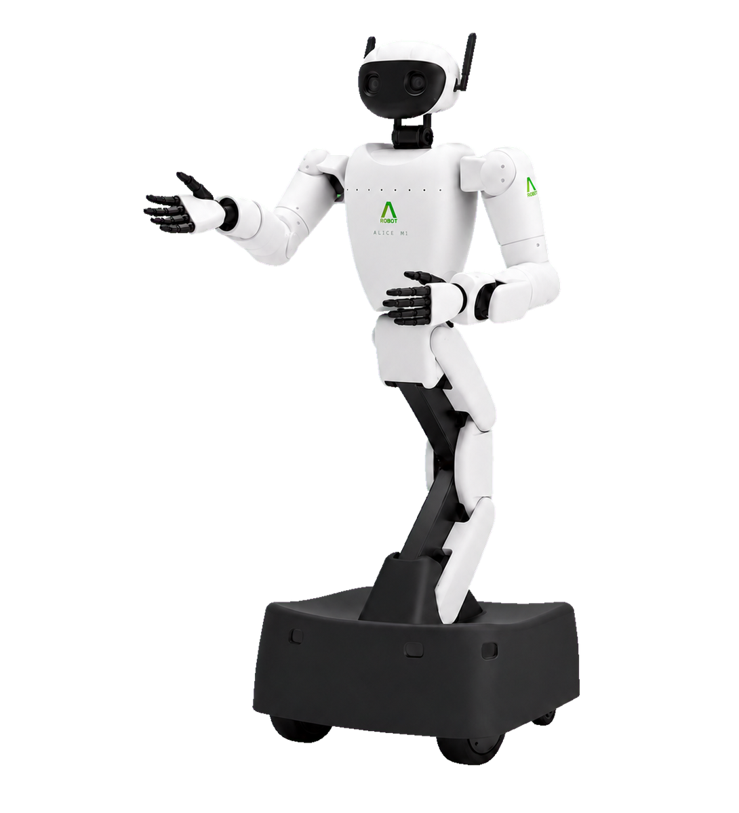
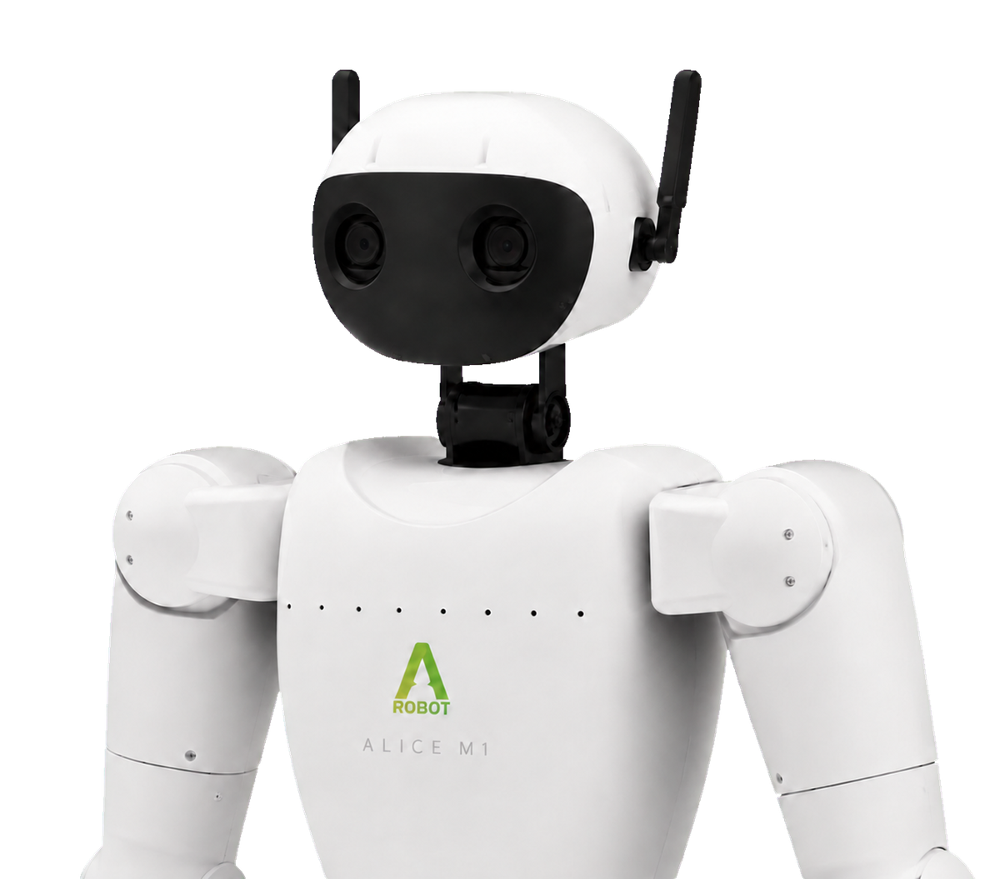

카메라
- 색과 질감을 함께 볼 수 있다.
- 어두워지면 특징을 놓치기 쉽다.
LECTURE 01
로봇을 움직이려면 무엇이 필요한가

QUESTION
CONCEPT

링크와 관절이 움직임의 뼈대를 만든다.
CONCEPT
CONCEPT

같은 지점의 좌표값은 보는 좌표계에 따라 달라진다.
BUILD
BUILD

base_link는 로봇 링크가 시작되는 루트 좌표계다.
BUILD

CONCEPT

센서는 저마다 다른 방식으로 주변과 몸의 상태를 인지한다.
COMPARE
QUESTION
CONCEPT
BUILD
토픽은 바뀌는 값을 계속 흘려보낸다.
BUILD
BUILD
액션은 긴 작업의 진행률과 결과를 돌려준다.
GUIDE
| 토픽 | 센서처럼 계속 보내는 값에 쓴다. |
|---|---|
| 서비스 | 금방 끝나는 요청과 응답에 맞다. |
| 액션 | 긴 작업의 진행률과 결과도 보낸다. |
PRACTICE
PRACTICE
PRACTICE
RECAP